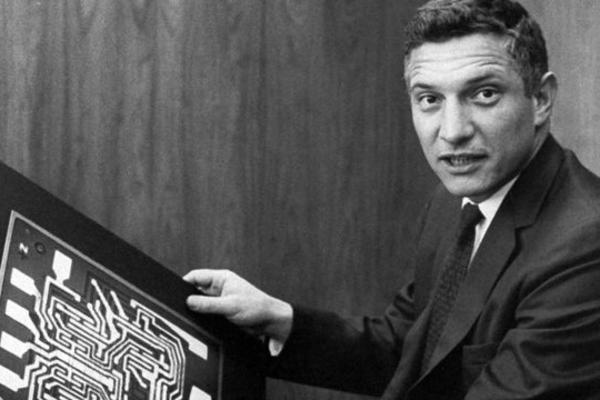

Robert Norton Noyce
the Mayor of Silicon Valley

He was an American physicist who co-founded Fairchild Semiconductor in 1957 and Intel Corporation in 1968.
Patents
- Method and apparatus for forming semiconductor structures, filed August 1954, issued February 1959, assigned to Philco Corporation
- Transistor structure and method, filed April 1957, issued March 1960, assigned to Beckmann Instruments
- Semiconductor scanning device, filed June 1959, issued November 1960, assigned to Fairchild Semiconductor
- Transistor structure and method of making the same, filed March 1957, issued January 1961, assigned to Clevite Corporation
- Semiconductor switching device, filed June 1959, issued February 1961, assigned to Fairchild Semiconductor
- Semiconductor Device and Lead Structure, filed July 1959, issued April 1961, assigned to Fairchild Semiconductor
- Field effect transistor, filed January 1958, issued November 1961, assigned to Clevite Corporation
- Field controlled avalanche semiconductive device, filed February 1958, issued July 1963, assigned to Clevite Corporation
- Method for fabricating transistors, filed June 1959, issued October 1963, assigned to Fairchild Camera and Instrument Corp.
- Transistor structure controlled by an avalanche barrier, filed June 1958, issued November 1963, assigned to Clevite Corporation
- Method of making a transistor structure (coinventor William Shockley), filed April 1957, issued July 1964, assigned to Clevite Corporation
- Semiconductor circuit complex having isolation means, filed September 1959, issued September 1964, assigned to Fairchild Camera and Instrument Corp.
- Method of forming a semiconductor, filed July 1963, issued May 1965, assigned to Fairchild Camera and Instrument Corp.
- Solid state circuit with crossing leads, filed April 1961, issued August 1965, assigned to Fairchild Camera and Instrument Corp.
- Trainable system, filed October 1964, issued June 1967, assigned to Fairchild Camera and Instrument Corp.
Berlin, Leslie. "Adrenaline and Gasoline." The Man behind the Microchip: Robert Noyce and the Invention of Silicon Valley.